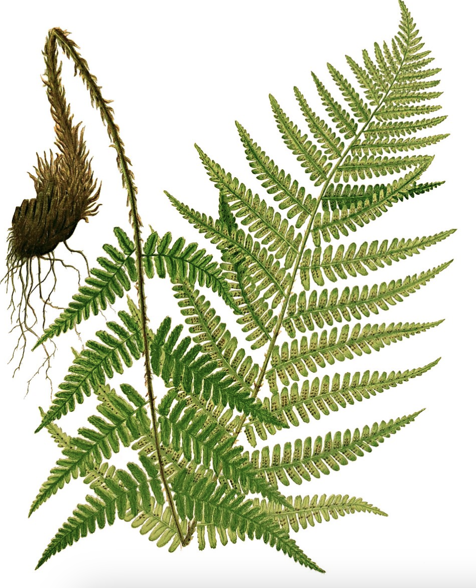
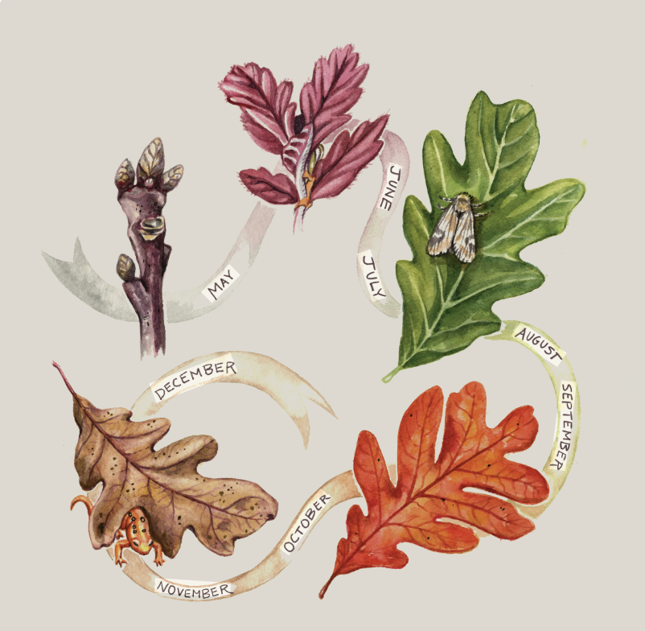
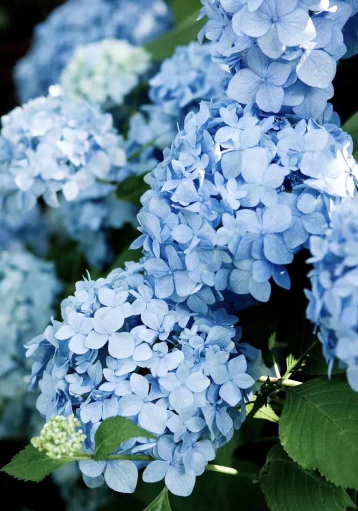

Unfold
A small green hand, opening slowly to the morning.
Not everything opens all at once. Some things need a little warmth and a little time.
Some things grow quietly. You only have to slow down to notice.

A small green hand, opening slowly to the morning.
Not everything opens all at once. Some things need a little warmth and a little time.

The rain has left, but a little of it stays with me.
A leaf holds a drop of water like a small memory. For a moment, nothing falls.

Without a sound, I become something I have never been.
One morning, a small flower appears where a bud used to be. There is no hurry to grow.
A small collection of plants, photographs, and things that are easy to miss. A place to pause and look closer.